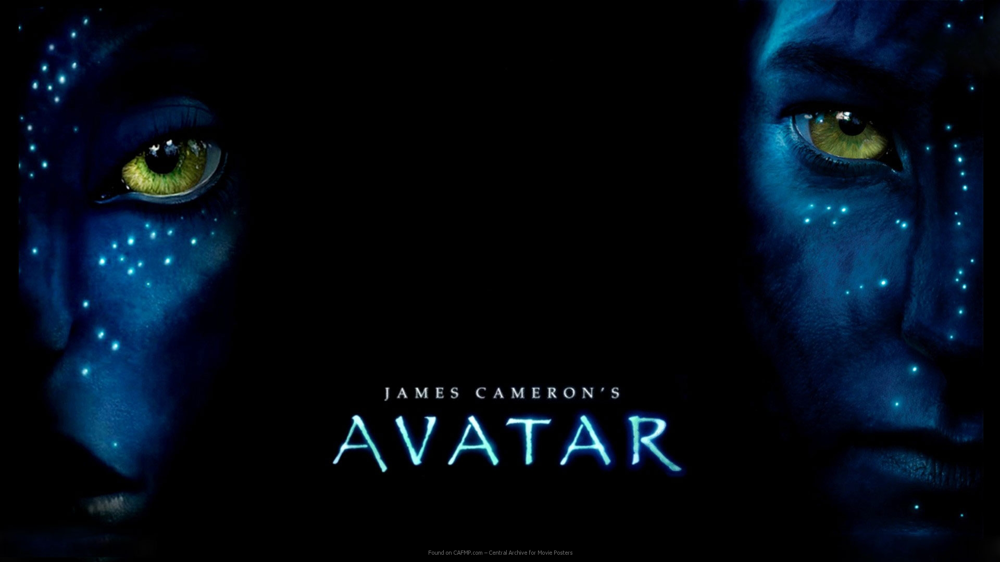

“Аватар” - это научно-фантастический фильм 2009 года, снятый режиссером Джеймсом Кэмероном.
Действие происходит в 2154 году, где главный герой, Джейк Салли, парализованный солдат, подключается к телу своего аватара на планете Пандора.
Продолжительность фильма: 2 ч 42 мин

“Пираты Карибского моря: Сундук мертвеца” - это продолжение фильма “Пираты Карибского моря” 2003 года. Фильм вышел в 2006 году и был снят Гор Вербински. В фильме Джонни Депп возвращается в роли Джека Воробья, а также Орландо Блум и Кира Найтли. Сюжет продолжает приключения Джека Воробья и Уилла Тернера, которые должны найти ключ к сундуку мертвеца, чтобы освободить капитана Барбоссу из Дьявольского контракта.
Продолжительность фильма: 2 ч 2 мин

“Константин: Повелитель тьмы” - это американский фильм ужасов 2005 года, основанный на комиксах DC Comics о Джоне Константине, оккультном детективе и эксперте по сверхъестественному. Фильм был снят Фрэнсисом Лоуренсом с Киану Ривзом в главной роли.
Продолжительность фильма: 2 ч 2 мин